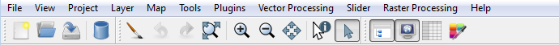

close to Tool bar.
close to Tool bar.
The Tool Bar Settings is used to change the default configurations of the tool bars .
It is accessed through:
Tools -> Customize... -> Tool bars
There are three default tool bars already defined with a set of tools in it. To see the items grouped in a tool bar, just scroll the Actions list.
Hint: In TerraView main window click on View menu to see all tool bar names or right click over an empty area of the tool bar. These names are used here to reference each tool bar.

It is possible to add a new tool bar, to remove an existing one, to unselect some tools of a specific tool bar or to add new items in a tool bar. The details of all theses possibilities are explained bellow. close to Tool bar. and confirm with Yes.
and confirm with Yes.